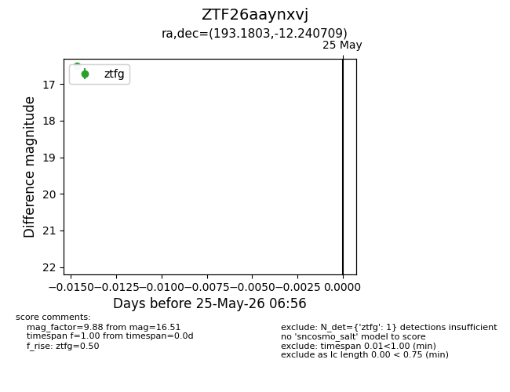
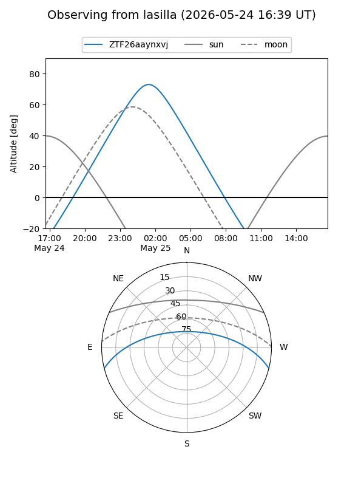
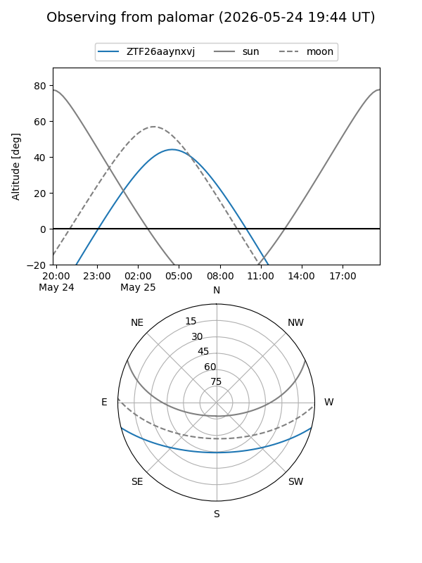

ZTF26aaynxvj
Target ZTF26aaynxvj at 2026-05-25 06:57
Aliases and brokers:
lsst-FINK: link
lsst-Lasair: link
lsst-ALeRCE: link
ztf-FINK: link
ztf-Lasair: link
ztf-ALeRCE: link
alt names
ZTF26aaynxvj (ztf,fink_ztf)
Coordinates:
equatorial (ra, dec) = 193.1803,-12.24071
equatorial (HMS+DMS) = 12:52:43.27,-12:14:26.55
galactic (l, b) = (303.4262,+50.62981)
Flags:
Photometry:
last ztfg=16.51
1 ztfg detections
Lightcurve

Visibility


Additional plots